5 – 30 luglio 2010
La decima campagna di scavo del Dipartimento di Archeologia dell'Università degli Studi di Bologna, come sempre diretta da Giuseppe Lepore e coordinata sul campo dal dott. Tommaso Casci Ceccacci, è stata concentrata su un unico settore di scavo con due responsabili: il dott. Fabio Visani per la zona al di fuori dell’abside e la dott.ssa Elisa Cipriani per l’interno della navata. Il Laboratorio materiali, attivato contestualmente allo scavo e diretto dalla dott.ssa Anna Gamberini, è stato condotto dalla dott.ssa Gilda Assenti.
Ancor prima di dare inizio alle operazioni di scavo il Comune di Corinaldo aveva provveduto, grazie alla prontezza dell’Ufficio Tecnico, ad allestire una copertura provvisoria della nuova area di scavo nel campo sportivo dietro alla chiesa. Al termine dei lavori l'area è stata messa in sicurezza, mentre si è dato inizio ai lavori di restauro e di sistemazione di tutte le strutture (dott. Mirco Zaccaria), grazie al "consueto" contributo della Soprintendenza per i Beni Archeologici delle Marche, dovuto alla costante del Soprintendente Giuliano de Marinis.
AREA H
Le indagini all’esterno dell’abside hanno messo in luce le fasi più tarde della frequentazione dell’area: una strada glareata che costeggiava, tra Seicento e Settecento la parete nord della chiesa, e, al di sotto, il piano d’uso presente tra 1500-1600, costituito da semplici battuti con frammenti di laterizi e ghiaia.
Ora si conosce meglio anche la forma dell’abside laterale: è stata infatti scavata la spoliazione delle murature di questo settore della chiesa romanica, che ha restituito la forma di un muro largo ca. 50 cm con lesene all’esterno. Si è dunque giunti alla definizione precisa della chiesa primitiva altomedievale: si tratta di un piccolo sacello lungo poco più di 7 m e largo ca. 5,5 m, con abside circolare, davanti al quale sono emerse due tombe allineate, con andamento E-O. Questo dato conferma la dimensione ridotta della prima chiesa e permette di ipotizzare la sua nascita come sacello funerario, poi trasformata nel grande edificio romanico a tre navate.
All’interno della navata si è proceduto all’eliminazione di strati tardo antichi (US 2049) databili tra V e VI in base alla presenza di terra sigillata africana, lucerne africane, ceramica comune da cucina e una moneta. Sotto questi livelli è emersa una grande fornace di età romana, già intravista negli anni scorsi e ora scavata: si tratta della camera di combustione (2,30 x 2,30 m ca.) e dei resti di quattro setti murari che dovevano sostenere un piano forato.
LABORATORIO MATERIALI
Anche quest’anno si è proceduto, grazie al sicuro coordinamento della dott.ssa Gilda Assenti, alla sistemazione e razionalizzazione del deposito materiali annesso allo scavo. Tutti i materiali sono stati inventariati, fotografati e riposti con cura in nuove scaffalature, predisposte dagli amici della Contrada di Madonna del Piano.
Sono anche stati effettuati diversi campionamenti per le analisi del C 14 dei resti scheletrici più antichi, finalizzati alla definizione di cronologie assolute delle fasi più antiche.
Di particolare interesse è risultata poi la US 2049, per l’orizzonte tardo antico-altomedievale dei suoi materiali (terra sigillata africana, imitazioni locali di terra sigillata africana, una lucerna africana e ceramica da cucina di V-Vi sec). Nelle US 2079 e 2154, infine, sono stati rinvenuti numerosissimi frammenti di anse e orli di paioli, riconducibili ad un orizzonte di XII-XIII secolo e di probabile produzione locale.
Partecipanti
- Giuseppe Lepore
- Tommaso Casci Ceccacci
- Gilda Assenti
- Elisa Cipriani
- Fabio Visani
- Federica Boschi
- Marco Brunetti
- Maria Letizia Carra
- Chiara Di Pietro
- Nunziatina Fragale
- Federica Galazzi
- Elena Guidi
- Francesco Luna
- Diego Manfredi
- Angelo Prestipino
- Emanuela Razza
- Enrico Ravaioli
- Ilaria Rossetti
- Simone Schmid Zanchi
- Massimo Sericola
- Michele Silani
- Mirco Zaccaria
- 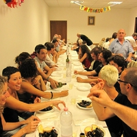Campagna di scavi 2010
- 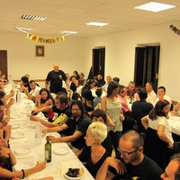Campagna di scavi 2010
- 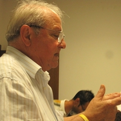Campagna di scavi 2010
- 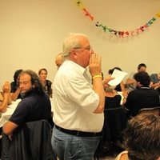Campagna di scavi 2010
- 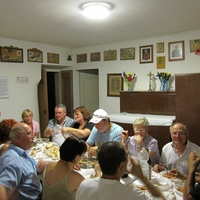Campagna di scavi 2010
- 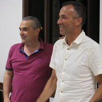Campagna di scavi 2010
- 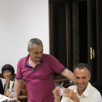Campagna di scavi 2010
- 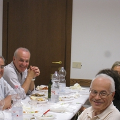Campagna di scavi 2010
- 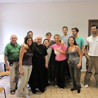Campagna di scavi 2010
- 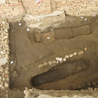Campagna di scavi 2010
- 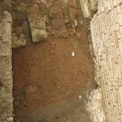Campagna di scavi 2010
- 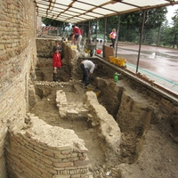Campagna di scavi 2010
- 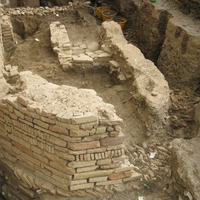Campagna di scavi 2010


{kind=link}
{kind=link}
{kind=link}
{kind=link}
{kind=link}
{kind=link}
{kind=link}
{kind=link}
{kind=link}
{kind=link}
{kind=link}
{kind=link}
{kind=link}